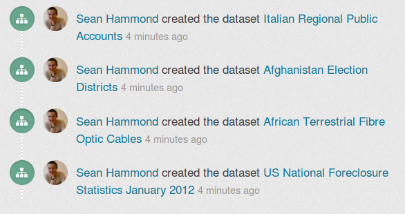
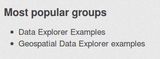
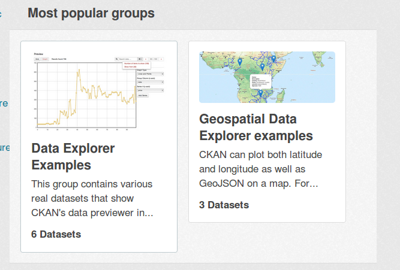
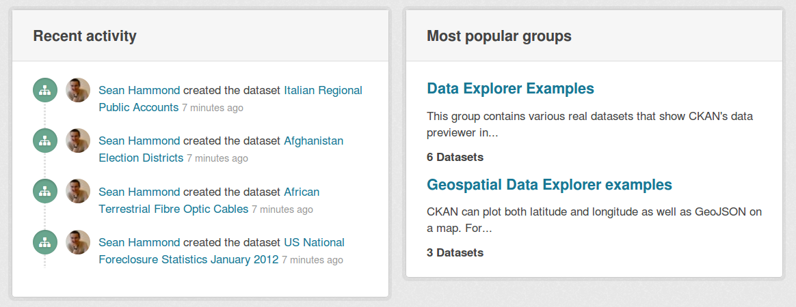

Customizing CKAN’s templates¶
CKAN pages are generated from Jinja2 template files. This tutorial will walk you through the process of writing your own template files to modify and replace the default ones, and change the layout and content of CKAN pages.
See also
- String internationalization
- How to mark strings for translation in your template files.
Creating a CKAN extension¶
A CKAN theme is simply a CKAN plugin that contains some custom templates and static files, so before getting started on our CKAN theme we’ll have to create an extension and plugin. For a detailed explanation of the steps below, see Writing extensions tutorial.
Use the paster create command to create an empty extension:
. /usr/lib/ckan/default/bin/activate cd /usr/lib/ckan/default/src paster --plugin=ckan create -t ckanext ckanext-example_themeCreate the file ckanext-example_theme/ckanext/example_theme/plugin.py with the following contents:
# encoding: utf-8 import ckan.plugins as plugins class ExampleThemePlugin(plugins.SingletonPlugin): '''An example theme plugin. ''' pass
Edit the entry_points in ckanext-example_theme/setup.py to look like this:
entry_points=''' [ckan.plugins] example_theme=ckanext.example_theme.plugin:ExampleThemePlugin ''',
Run python setup.py develop:
cd ckanext-example_theme python setup.py developAdd the plugin to the ckan.plugins setting in your /etc/ckan/default/development.ini file:
ckan.plugins = stats text_view recline_view example_theme
Start CKAN in the development web server:
$ paster serve --reload /etc/ckan/default/development.ini Starting server in PID 13961. serving on 0.0.0.0:5000 view at http://127.0.0.1:5000
Open the CKAN front page in your web browser. If your plugin is in the ckan.plugins setting and CKAN starts without crashing, then your plugin is installed and CKAN can find it. Of course, your plugin doesn’t do anything yet.
Replacing a default template file¶
Every CKAN page is generated by rendering a particular template. For each page of a CKAN site there’s a corresponding template file. For example the front page is generated from the ckan/templates/home/index.html file, the /about page is generated from ckan/templates/home/about.html, the datasets page at /dataset is generated from ckan/templates/package/search.html, etc.
To customize pages, our plugin needs to register its own custom template directory containing template files that override the default ones. Edit the ckanext-example_theme/ckanext/example_theme/plugin.py file that we created earlier, so that it looks like this:
# encoding: utf-8
'''plugin.py
'''
import ckan.plugins as plugins
import ckan.plugins.toolkit as toolkit
class ExampleThemePlugin(plugins.SingletonPlugin):
'''An example theme plugin.
'''
# Declare that this class implements IConfigurer.
plugins.implements(plugins.IConfigurer)
def update_config(self, config):
# Add this plugin's templates dir to CKAN's extra_template_paths, so
# that CKAN will use this plugin's custom templates.
# 'templates' is the path to the templates dir, relative to this
# plugin.py file.
toolkit.add_template_directory(config, 'templates')
This new code does a few things:
It imports CKAN’s plugins toolkit module:
import ckan.plugins.toolkit as toolkit
The plugins toolkit is a Python module containing core functions, classes and exceptions for CKAN plugins to use. For more about the plugins toolkit, see Writing extensions tutorial.
It calls implements() to declare that it implements the IConfigurer plugin interface:
plugins.implements(plugins.IConfigurer)
This tells CKAN that our ExampleThemePlugin class implements the methods declared in the IConfigurer interface. CKAN will call these methods of our plugin class at the appropriate times.
It implements the update_config() method, which is the only method declared in the IConfigurer interface:
def update_config(self, config): # Add this plugin's templates dir to CKAN's extra_template_paths, so # that CKAN will use this plugin's custom templates. # 'templates' is the path to the templates dir, relative to this # plugin.py file. toolkit.add_template_directory(config, 'templates')
CKAN will call this method when it starts up, to give our plugin a chance to modify CKAN’s configuration settings. Our update_config() method calls add_template_directory() to register its custom template directory with CKAN. This tells CKAN to look for template files in ckanext-example_theme/ckanext/example_theme/templates whenever it renders a page. Any template file in this directory that has the same name as one of CKAN’s default template files, will be used instead of the default file.
Now, let’s customize the CKAN front page. We first need to discover which template file CKAN uses to render the front page, so we can replace it. Set debug to true in your /etc/ckan/default/development.ini file:
[DEFAULT]
# WARNING: *THIS SETTING MUST BE SET TO FALSE ON A PRODUCTION ENVIRONMENT*
debug = true
The first template file listed is the one we’re interested in:
Template name: home/index.html
Template path: /usr/lib/ckan/default/src/ckan/ckan/templates/home/index.html
This tells us that home/index.html is the root template file used to render the front page. The debug footer appears at the bottom of every CKAN page, and can always be used to find the page’s template files, and other information about the page.
Note
Most CKAN pages are rendered from multiple template files. The first file listed in the debug footer is the root template file of the page. All other template files used to render the page (listed further down in the debug footer) are either included by the root file, or included by another file that is included by the root file.
To figure out which template file renders a particular part of the page you have to inspect the source code of the template files, starting with the root file.
Now let’s override home/index.html using our plugins’ custom templates directory. Create the ckanext-example_theme/ckanext/example_theme/templates directory, create a home directory inside the templates directory, and create an empty index.html file inside the home directory:
ckanext-example_theme/
ckanext/
example_theme/
templates/
home/
index.html <-- An empty file.
If you now restart the development web server (kill the server using Ctrl-c, then run the paster serve command again) and reload the CKAN front page in your web browser, you should see an empty page, because we’ve replaced the template file for the front page with an empty file.
Note
If you run paster serve with the --reload option, then it isn’t usually necessary to restart the server after editing a Python file, a template file, your CKAN config file, or any other CKAN file. If you’ve added a new file or directory, however, you need to restart the server manually.
Jinja2¶
CKAN template files are written in the Jinja2 templating language. Jinja template files, such as our index.html file, are simply text files that, when processed, generate any text-based output format such as HTML, XML, CSV, etc. Most of the template files in CKAN generate HTML.
We’ll introduce some Jinja2 basics below. Jinja2 templates have many more features than these, for full details see the Jinja2 docs.
Expressions and variables¶
Jinja2 expressions are snippets of code between {{ ... }} delimiters, when a template is rendered any expressions are evaluated and replaced with the resulting value.
The simplest use of an expression is to display the value of a variable, for example {{ foo }} in a template file will be replaced with the value of the variable foo when the template is rendered.
CKAN makes a number of global variables available to all templates. One such variable is app_globals, which can be used to access certain global attributes including some of the settings from your CKAN config file. For example, to display the value of the ckan.site_title setting from your config file you would put this code in any template file:
<p>The title of this site is: {{ app_globals.site_title }}.</p>
Note
The app_globals variable is also sometimes called g (an alias), you may see g in some CKAN templates. See Variables and functions available to templates.
Note
Not all config settings are available to templates via app_globals. The sqlalchemy.url setting, for example, contains your database password, so making that variable available to templates might be a security risk.
If you’ve added your own custom options to your config file, these will not be available in app_globals automatically. See Accessing custom config settings from templates.
Note
If a template tries to render a variable or attribute that doesn’t exist, rather than crashing or giving an error message, the Jinja2 expression simply evaluates to nothing (an empty string). For example, these Jinja2 expressions will output nothing:
{{ app_globals.an_attribute_that_does_not_exist }}
{{ a_variable_that_does_not_exist }}
If, on the other hand, you try to render an attribute of a variable that doesn’t exist, then Jinja2 will crash. For example, this Jinja2 expression will crash with an UndefinedError: 'a_variable_that_does_not_exist' is undefined:
{{ a_variable_that_does_not_exist.an_attribute_that_does_not_exist }}
See the Jinja2 variables docs for details.
Note
Jinja2 expressions can do much more than print out the values of variables, for example they can call Jinja2’s global functions, CKAN’s template helper functions and any custom template helper functions provided by your extension, and use any of the literals and operators that Jinja provides.
See Variables and functions available to templates for a list of variables and functions available to templates.
Tags¶
ckan.site_title is an example of a simple string variable. Some variables, such as ckan.plugins, are lists, and can be looped over using Jinja’s {% for %} tag.
Jinja tags are snippets of code between {% ... %} delimiters that control the logic of the template. For example, we can output a list of the currently enabled plugins with this code in any template file:
<p>The currently enabled plugins are:</p>
<ul>
{% for plugin in app_globals.plugins %}
<li>{{ plugin }}</li>
{% endfor %}
</ul>
Other variables, such as ckan.tracking_enabled, are booleans, and can be tested using Jinja’s {% if %} tag:
{% if g.tracking_enabled %}
<p>CKAN's page-view tracking feature is enabled.</p>
{% else %}
<p>CKAN's page-view tracking feature is <i>not</i> enabled.</p>
{% endif %}
Comments¶
Finally, any text between {# ... #} delimiters in a Jinja2 template is a comment, and will not be output when the template is rendered:
{# This text will not appear in the output when this template is rendered. #}
Extending templates with {% ckan_extends %}¶
CKAN provides a custom Jinja tag {% ckan_extends %} that we can use to declare that our home/index.html template extends the default home/index.html template, instead of completely replacing it. Edit the empty index.html file you just created, and add one line:
{% ckan_extends %}
If you now reload the CKAN front page in your browser, you should see the normal front page appear again. When CKAN processes our index.html file, the {% ckan_extends %} tag tells it to process the default home/index.html file first.
Replacing template blocks with {% block %}¶
Jinja templates can contain blocks that child templates can override. For example, CKAN’s default home/layout1.html template (one of the files used to render the CKAN front page) has a block that contains the Jinja and HTML code for the “featured group” that appears on the front page:
{% block featured_group %}
{% snippet 'home/snippets/featured_group.html' %}
{% endblock %}
Note
This code calls a template snippet that contains the actual Jinja and HTML code for the featured group, more on snippets later.
Note
The CKAN front page supports a number of different layouts: layout1, layout2, layout3, etc. The layout can be chosen by a sysadmin using the admin page. This tutorial assumes your CKAN is set to use the first (default) layout.
When a custom template file extends one of CKAN’s default template files using {% ckan_extends %}, it can replace any of the blocks from the default template with its own code by using {% block %}. Create the file ckanext-example_theme/ckanext/example_theme/templates/home/layout1.html with these contents:
{% ckan_extends %}
{% block featured_group %}
Hello block world!
{% endblock %}
This file extends the default layout1.html template, and overrides the featured_group block. Restart the development web server and reload the CKAN front page in your browser. You should see that the featured groups section of the page has been replaced, but the rest of the page remains intact.
Note
Most template files in CKAN contain multiple blocks. To find out what blocks a template has, and which block renders a particular part of the page, you have to look at the source code of the default template files.
Extending parent blocks with Jinja’s {{ super() }}¶
If you want to add some code to a block but don’t want to replace the entire block, you can use Jinja’s {{ super() }} tag:
{% ckan_extends %}
{% block featured_group %}
<p>This paragraph will be added to the top of the
<code>featured_group</code> block.</p>
{# Insert the contents of the original featured_group block: #}
{{ super() }}
<p>This paragraph will be added to the bottom of the
<code>featured_group</code> block.</p>
{% endblock %}
When the child block above is rendered, Jinja will replace the {{ super() }} tag with the contents of the parent block. The {{ super() }} tag can be placed anywhere in the block.
Template helper functions¶
Now let’s put some interesting content into our custom template block. One way for templates to get content out of CKAN is by calling CKAN’s template helper functions.
For example, let’s replace the featured group on the front page with an activity stream of the site’s recently created, updated and deleted datasets. Change the code in ckanext-example_theme/ckanext/example_theme/templates/home/layout1.html to this:
{% ckan_extends %}
{% block featured_group %}
{{ h.recently_changed_packages_activity_stream(limit=4) }}
{% endblock %}
Reload the CKAN front page in your browser and you should see a new activity stream:
To call a template helper function we use a Jinja2 expression (code wrapped in {{ ... }} brackets), and we use the global variable h (available to all templates) to access the helper:
{{ h.recently_changed_packages_activity_stream(limit=4) }}
To see what other template helper functions are available, look at the template helper functions reference docs.
Adding your own template helper functions¶
Plugins can add their own template helper functions by implementing CKAN’s ITemplateHelpers plugin interface. (see Writing extensions tutorial for a detailed explanation of CKAN plugins and plugin interfaces).
Let’s add another item to our custom front page: a list of the most “popular” groups on the site (the groups with the most datasets). We’ll add a custom template helper function to select the groups to be shown. First, in our plugin.py file we need to implement ITemplateHelpers and provide our helper function. Change the contents of plugin.py to look like this:
# encoding: utf-8
import ckan.plugins as plugins
import ckan.plugins.toolkit as toolkit
def most_popular_groups():
'''Return a sorted list of the groups with the most datasets.'''
# Get a list of all the site's groups from CKAN, sorted by number of
# datasets.
groups = toolkit.get_action('group_list')(
data_dict={'sort': 'package_count desc', 'all_fields': True})
# Truncate the list to the 10 most popular groups only.
groups = groups[:10]
return groups
class ExampleThemePlugin(plugins.SingletonPlugin):
'''An example theme plugin.
'''
plugins.implements(plugins.IConfigurer)
# Declare that this plugin will implement ITemplateHelpers.
plugins.implements(plugins.ITemplateHelpers)
def update_config(self, config):
# Add this plugin's templates dir to CKAN's extra_template_paths, so
# that CKAN will use this plugin's custom templates.
toolkit.add_template_directory(config, 'templates')
def get_helpers(self):
'''Register the most_popular_groups() function above as a template
helper function.
'''
# Template helper function names should begin with the name of the
# extension they belong to, to avoid clashing with functions from
# other extensions.
return {'example_theme_most_popular_groups': most_popular_groups}
We’ve added a number of new features to plugin.py. First, we defined a function to get the most popular groups from CKAN:
def most_popular_groups():
'''Return a sorted list of the groups with the most datasets.'''
# Get a list of all the site's groups from CKAN, sorted by number of
# datasets.
groups = toolkit.get_action('group_list')(
data_dict={'sort': 'package_count desc', 'all_fields': True})
# Truncate the list to the 10 most popular groups only.
groups = groups[:10]
return groups
This function calls one of CKAN’s action functions to get the groups from CKAN. See Writing extensions tutorial for more about action functions.
Next, we called implements() to declare that our class now implements ITemplateHelpers:
plugins.implements(plugins.ITemplateHelpers)
Finally, we implemented the get_helpers() method from ITemplateHelpers to register our function as a template helper:
def get_helpers(self):
'''Register the most_popular_groups() function above as a template
helper function.
'''
# Template helper function names should begin with the name of the
# extension they belong to, to avoid clashing with functions from
# other extensions.
return {'example_theme_most_popular_groups': most_popular_groups}
Now that we’ve registered our helper function, we need to call it from our template. As with CKAN’s default template helpers, templates access custom helpers via the global variable h. Edit ckanext-example_theme/ckanext/example_theme/templates/home/layout1.html to look like this:
{% ckan_extends %}
{% block featured_group %}
{{ h.recently_changed_packages_activity_stream(limit=4) }}
{% endblock %}
{% block featured_organization %}
{# Show a list of the site's most popular groups. #}
<h3>Most popular groups</h3>
<ul>
{% for group in h.example_theme_most_popular_groups() %}
<li>{{ group.display_name }}</li>
{% endfor %}
</ul>
{% endblock %}
Now reload your CKAN front page in your browser. You should see the featured organization section replaced with a list of the most popular groups:
Simply displaying a list of group titles isn’t very good. We want the groups to be hyperlinked to their pages, and also to show some other information about the group such as its description and logo image. To display our groups nicely, we’ll use CKAN’s template snippets...
Template snippets¶
Template snippets are small snippets of template code that, just like helper functions, can be called from any template file. To call a snippet, you use another of CKAN’s custom Jinja2 tags: {% snippet %}. CKAN comes with a selection of snippets, which you can find in the various snippets directories in ckan/templates/, such as ckan/templates/snippets/ and ckan/templates/package/snippets/. For a complete list of the default snippets available to templates, see Template snippets reference.
ckan/templates/group/snippets/group_list.html is a snippet that renders a list of groups nicely (it’s used to render the groups on CKAN’s /group page and on user dashboard pages, for example):
{#
Display a grid of group items.
groups - A list of groups.
Example:
{% snippet "group/snippets/group_list.html" %}
#}
{% block group_list %}
<ul class="media-grid" data-module="media-grid">
{% block group_list_inner %}
{% for group in groups %}
{% snippet "group/snippets/group_item.html", group=group, position=loop.index %}
{% endfor %}
{% endblock %}
</ul>
{% endblock %}
(As you can see, this snippet calls another snippet, group_item.html, to render each individual group.)
Let’s change our ckanext-example_theme/ckanext/example_theme/templates/home/layout1.html file to call this snippet:
{% ckan_extends %}
{% block featured_group %}
{{ h.recently_changed_packages_activity_stream(limit=4) }}
{% endblock %}
{% block featured_organization %}
<h3>Most popular groups</h3>
{# Call the group_list.html snippet. #}
{% snippet 'group/snippets/group_list.html',
groups=h.example_theme_most_popular_groups() %}
{% endblock %}
Here we pass two arguments to the {% snippet %} tag:
{% snippet 'group/snippets/group_list.html',
groups=h.example_theme_most_popular_groups() %}
the first argument is the name of the snippet file to call. The second argument, separated by a comma, is the list of groups to pass into the snippet. After the filename you can pass any number of variables into a snippet, and these will all be available to the snippet code as top-level global variables. As in the group_list.html docstring above, each snippet’s docstring should document the parameters it requires.
If you reload your CKAN front page in your web browser now, you should see the most popular groups rendered in the same style as the list of groups on the /groups page:
This style isn’t really what we want for our front page, each group is too big. To render the groups in a custom style, we can define a custom snippet...
Adding your own template snippets¶
Just as plugins can add their own template helper functions, they can also add their own snippets. To add template snippets, all a plugin needs to do is add a snippets directory in its templates directory, and start adding files. The snippets will be callable from other templates immediately.
Note
For CKAN to find your plugins’ snippets directories, you should already have added your plugin’s custom template directory to CKAN, see Replacing a default template file.
Let’s create a custom snippet to display our most popular groups, we’ll put the <h3>Most popular groups</h3> heading into the snippet and make it nice and modular, so that we can reuse the whole thing on different parts of the site if we want to.
Create a new directory ckanext-example_theme/ckanext/example_theme/templates/snippets containing a file named example_theme_most_popular_groups.html with these contents:
{#
Renders a list of the site's most popular groups.
groups - the list of groups to render
#}
<h3>Most popular groups</h3>
<ul>
{% for group in groups %}
<li>
<a href="{{ h.url_for('group_read', action='read', id=group.name) }}">
<h3>{{ group.display_name }}</h3>
</a>
{% if group.description %}
<p>
{{ h.markdown_extract(group.description, extract_length=80) }}
</p>
{% else %}
<p>{{ _('This group has no description') }}</p>
{% endif %}
{% if group.packages %}
<strong>{{ ungettext('{num} Dataset', '{num} Datasets', group.packages).format(num=group.packages) }}</strong>
{% else %}
<span>{{ _('0 Datasets') }}</span>
{% endif %}
</li>
{% endfor %}
</ul>
Note
As in the example above, a snippet should have a docstring at the top of the file that briefly documents what the snippet does and what parameters it requires. See Snippets should have docstrings.
This code uses a Jinja2 for loop to render each of the groups, and calls a number of CKAN’s template helper functions:
- To hyperlink each group’s name to the group’s page, it calls url_for().
- If the group has a description, it calls markdown_extract() to render the description nicely.
- If the group doesn’t have a description, it uses the _() function to mark the 'This group has no description' message for translation. When the page is rendered in a user’s web browser, this string will be shown in the user’s language (if there’s a translation of the string into that language).
- When rendering the group’s number of datasets, it uses the ungettext() function to mark the message for translation with localized handling of plural forms.
The code also accesses the attributes of each group: {{ group.name }}`, ``{{ group.display_name }}, {{ group.description }}, {{ group.packages }}, etc. To see what attributes a group or any other CKAN object (packages/datasets, organizations, users...) has, you can use CKAN’s API to inspect the object. For example to find out what attributes a group has, call the group_show() function.
Now edit your ckanext-example_theme/ckanext/example_theme/templates/home/layout1.html file and change it to use our new snippet instead of the default one:
{% ckan_extends %}
{% block featured_group %}
{{ h.recently_changed_packages_activity_stream(limit=4) }}
{% endblock %}
{% block featured_organization %}
{% snippet 'snippets/example_theme_most_popular_groups.html',
groups=h.example_theme_most_popular_groups() %}
{% endblock %}
Restart the development web server and reload the CKAN front page and you should see the most popular groups rendered differently:

Warning
Default snippets can be overridden. If a plugin adds a snippet with the same name as one of CKAN’s default snippets, the plugin’s snippet will override the default snippet wherever the default snippet is used.
Also if two plugins both have snippets with the same name, one of the snippets will override the other.
To avoid unintended conflicts, we recommend that snippet filenames begin with the name of the extension they belong to, e.g. snippets/example_theme_*.html. See Snippet filenames should begin with the name of the extension.
Note
Snippets don’t have access to the global template context variable, c (see Variables and functions available to templates). Snippets can access other global variables such as h, app_globals and request, as well as any variables explicitly passed into the snippet by the parent template when it calls the snippet with a {% snippet %} tag.
HTML tags and CSS classes¶
Our additions to the front page so far don’t look very good or fit in very well with the CKAN theme. Let’s make them look better by tweaking our template to use the right HTML tags and CSS classes.
There are two places to look for CSS classes available in CKAN:
The Bootstrap 2.3.2 docs. All of the HTML, CSS and JavaScript provided by Bootstrap is available to use in CKAN.
CKAN’s development primer page, which can be found on any CKAN site at /development/primer.html, for example demo.ckan.org/development/primer.html.
The primer page demonstrates many of the HTML and CSS elements available in CKAN, and by viewing the source of the page you can see what HTML tags and CSS classes they use.
Edit your example_theme_most_popular_groups.html file to look like this:
{# Renders a list of the site's most popular groups. #}
<div class="box">
<header class="module-heading">
<h3>Most popular groups</h3>
</header>
<section class="module-content">
<ul class="unstyled">
{% for group in h.example_theme_most_popular_groups() %}
<li>
<a href="{{ h.url_for('group_read', action='read', id=group.name) }}">
<h3>{{ group.display_name }}</h3>
</a>
{% if group.description %}
<p>
{{ h.markdown_extract(group.description, extract_length=80) }}
</p>
{% else %}
<p>{{ _('This group has no description') }}</p>
{% endif %}
{% if group.packages %}
<strong>{{ ungettext('{num} Dataset', '{num} Datasets', group.packages).format(num=group.packages) }}</strong>
{% else %}
<span>{{ _('0 Datasets') }}</span>
{% endif %}
</li>
{% endfor %}
</ul>
<section>
</div>
This simply wraps the code in a <div class="box">, a <header class="module-heading">, and a <section class="module-content">. We also added Bootstrap’s class="unstyled" to the <ul> tag to get rid of the bullet points. If you reload the CKAN front page, the most popular groups should look much better.
To wrap your activity stream in a similar box, edit layout1.html to look like this:
{% ckan_extends %}
{% block featured_group %}
<div class="box">
<header class="module-heading">
<h3>Recent activity</h3>
</header>
<div class="module-content">
{{ h.recently_changed_packages_activity_stream(limit=4) }}
</div>
</div>
{% endblock %}
{% block featured_organization %}
{% snippet 'snippets/example_theme_most_popular_groups.html' %}
{% endblock %}
Reload the CKAN front page, and you should see your activity stream and most popular groups looking much better:
Accessing custom config settings from templates¶
Not all CKAN config settings are available to templates via app_globals. In particular, if an extension wants to use its own custom config setting, this setting will not be available. If you need to access a custom config setting from a template, you can do so by wrapping the config setting in a helper function.
See also
For more on custom config settings, see Using custom config settings in extensions.
Todo
I’m not sure if making config settings available to templates like this is a very good idea. Is there an alternative best practice?
Let’s add a config setting, show_most_popular_groups, to enable or disable the most popular groups on the front page. First, add a new helper function to plugin.py to wrap the config setting.
# encoding: utf-8
import ckan.plugins as plugins
import ckan.plugins.toolkit as toolkit
from ckan.common import config
def show_most_popular_groups():
'''Return the value of the most_popular_groups config setting.
To enable showing the most popular groups, add this line to the
[app:main] section of your CKAN config file::
ckan.example_theme.show_most_popular_groups = True
Returns ``False`` by default, if the setting is not in the config file.
:rtype: boolean
'''
value = config.get('ckan.example_theme.show_most_popular_groups', False)
value = toolkit.asbool(value)
return value
def most_popular_groups():
'''Return a sorted list of the groups with the most datasets.'''
# Get a list of all the site's groups from CKAN, sorted by number of
# datasets.
groups = toolkit.get_action('group_list')(
data_dict={'sort': 'packages desc', 'all_fields': True})
# Truncate the list to the 10 most popular groups only.
groups = groups[:10]
return groups
class ExampleThemePlugin(plugins.SingletonPlugin):
'''An example theme plugin.
'''
plugins.implements(plugins.IConfigurer)
# Declare that this plugin will implement ITemplateHelpers.
plugins.implements(plugins.ITemplateHelpers)
def update_config(self, config):
# Add this plugin's templates dir to CKAN's extra_template_paths, so
# that CKAN will use this plugin's custom templates.
toolkit.add_template_directory(config, 'templates')
def get_helpers(self):
'''Register the most_popular_groups() function above as a template
helper function.
'''
# Template helper function names should begin with the name of the
# extension they belong to, to avoid clashing with functions from
# other extensions.
return {'example_theme_most_popular_groups': most_popular_groups,
'example_theme_show_most_popular_groups':
show_most_popular_groups,
}
def show_most_popular_groups():
'''Return the value of the most_popular_groups config setting.
To enable showing the most popular groups, add this line to the
[app:main] section of your CKAN config file::
ckan.example_theme.show_most_popular_groups = True
Returns ``False`` by default, if the setting is not in the config file.
:rtype: boolean
'''
value = config.get('ckan.example_theme.show_most_popular_groups', False)
value = toolkit.asbool(value)
return value
Note
Names of config settings provided by extensions should include the name of the extension, to avoid conflicting with core config settings or with config settings from other extensions. See Names of config settings should include the name of the extension.
Now we can call this helper function from our layout1.html template:
{% block featured_organization %}
{% if h.example_theme_show_most_popular_groups() %}
{% snippet 'snippets/example_theme_most_popular_groups.html' %}
{% else %}
{{ super() }}
{% endif %}
{% endblock %}
If the user sets this config setting to True in their CKAN config file, then the most popular groups will be displayed on the front page, otherwise the block will fall back to its default contents.